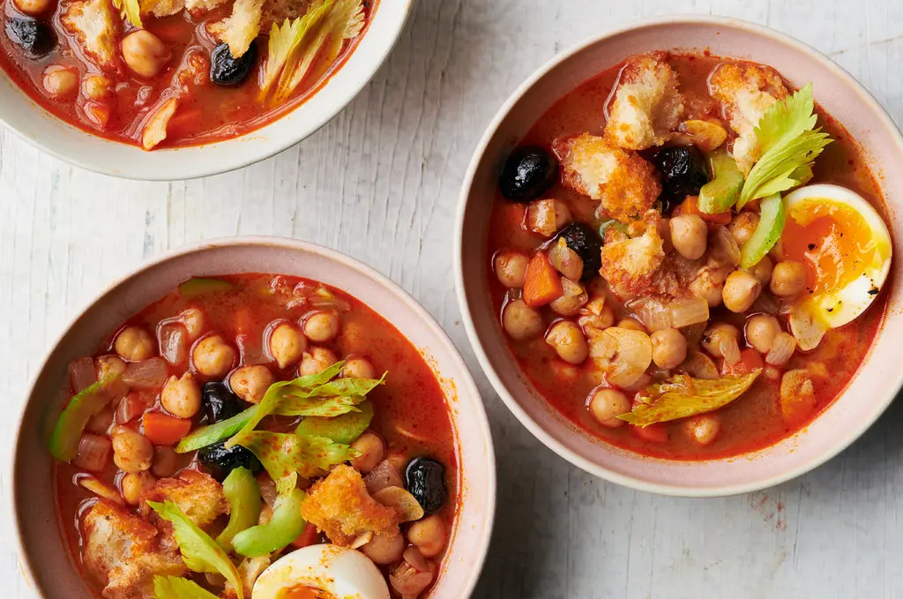

Chickpea Harissa Soup

Description
When the day calls for soup but your schedule doesn’t, look to an assertive ingredient that doesn’t require hours of simmering to extract flavor. Harissa, a North African chile paste, packs a punch right out of the jar (brands range in heat levels, though, so adjust quantity to taste). Dump in 2 cans of chickpeas: The starchy, seasoned liquid thickens the soup quickly. Besides that, additional vegetables and toppings you want to add are up to you: Soup should bend to your life, not the opposite.
Ingredients
- 3 tablespoons extra-virgin olive oil
- 1 large yellow onion, diced (about ½ cup)
- 1 large carrot, diced (about ¼ cup)
- Kosher salt
- 6 garlic cloves, peeled and thinly sliced
- 1 tablespoon ground cumin
- 1 to 2 tablespoons harissa, or to taste
- 2 (14-ounce) cans chickpeas
- 2 tablespoons lemon juice
- Honey, to taste (optional)
- Toppings (optional): More lemon juice, celery, celery leaves, herbs (cilantro, parsley, mint), capers, pitted olives, croutons or bread crumbs, soft-boiled egg
Steps
- Heat the olive oil in a Dutch oven or soup pot over medium heat. Add the onion, carrot and a pinch of salt, and sauté, stirring occasionally, until tender, 8 to 10 minutes. Stir in the garlic and cumin and cook until fragrant, 1 minute. Stir in the harissa and cook until fragrant, 1 minute.
- Add the chickpeas and their liquid. Fill a can with water, and add that to the pot as well. Season with salt, and bring to a boil. Reduce heat to a simmer and cook, stirring occasionally, until the chickpeas are warmed and the flavors have come together, about 10 minutes. Turn off the heat and stir in the lemon juice. Now taste it: Add salt, water (if too thick), honey (if too spicy), and/or harissa (if not spicy enough) to your liking. Serve hot, with whichever toppings you like.